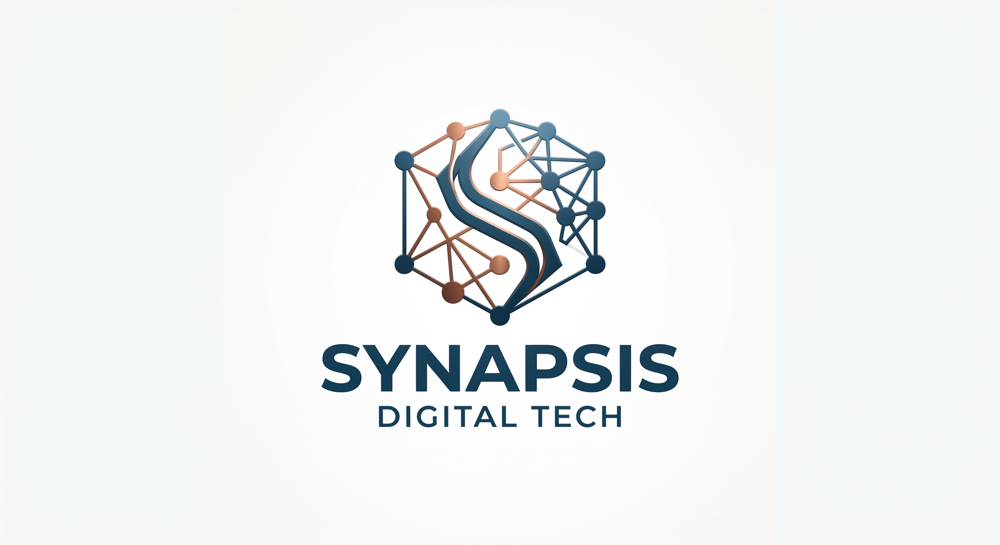

Conectar la estrategia corporativa con la tecnología de punta mediante el desarrollo de software a medida y servicios de consultoría integral, generando ventajas competitivas sostenibles para nuestros clientes.
Ser reconocidos internacionalmente como una consultora IT de excelencia, líder en la integración de ecosistemas digitales complejos y en la creación de experiencias tecnológicas transformadoras.
Construcción de software corporativo de misión crítica bajo estándares internacionales de calidad.
Migración y optimización de entornos locales hacia arquitecturas en la nube altamente seguras.
Asesoramiento de nivel ejecutivo para alinear la hoja de ruta tecnológica con los objetivos de crecimiento de la empresa.
Creación de productos digitales interactivos con experiencias de usuario optimizadas.
Supervisión experta de todas las fases del desarrollo para garantizar eficiencia, plazos y ROI.